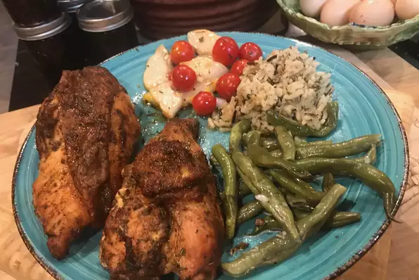

Spicy Chicken Breast

Description
This is a great skinless, chicken breast recipe that can be served over salad greens or as an entree! If serving over salad greens, cut chicken into strips and top with your favorite salsa or dressing.
Ingredients Required for 4 Servings
- 2 ½ tablespoons paprika
- 2 tablespoons garlic powder
- 1 tablespoon salt
- 1 tablespoon onion powder
- 1 tablespoon dried thyme
- 1 tablespoon ground cayenne pepper
- 1 tablespoon ground black pepper
- 4 skinless, boneless chicken breast halves
Calorie Count Per Serving = 173 Calories
Proteins Per Serving = 29.2 Grams
Steps
- In a medium bowl, mix together the paprika, garlic powder, salt, onion powder, thyme, cayenne pepper, and ground black pepper. Set aside about 3 tablespoons of this seasoning mixture for the chicken; store the remainder in an airtight container for later use (for seasoning fish, meats, or vegetables).
- Preheat grill for medium-high heat. Rub some of the reserved 3 tablespoons of seasoning onto both sides of the chicken breasts.
- Lightly oil the grill grate. Place chicken on the grill, and cook for 6 to 8 minutes on each side, until juices run clear.